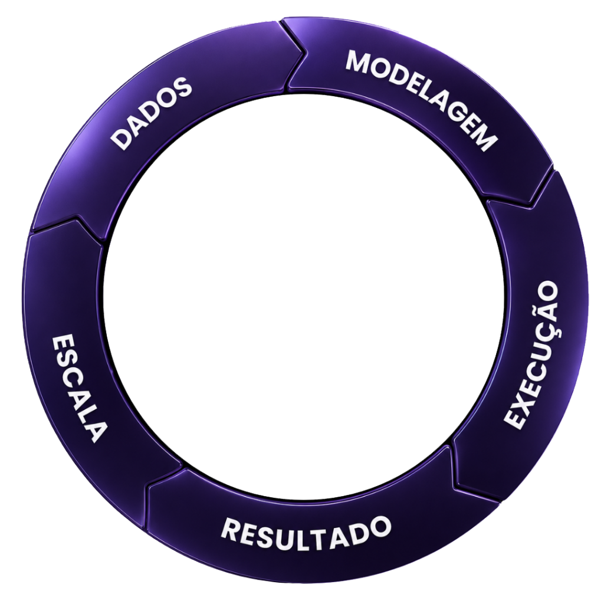
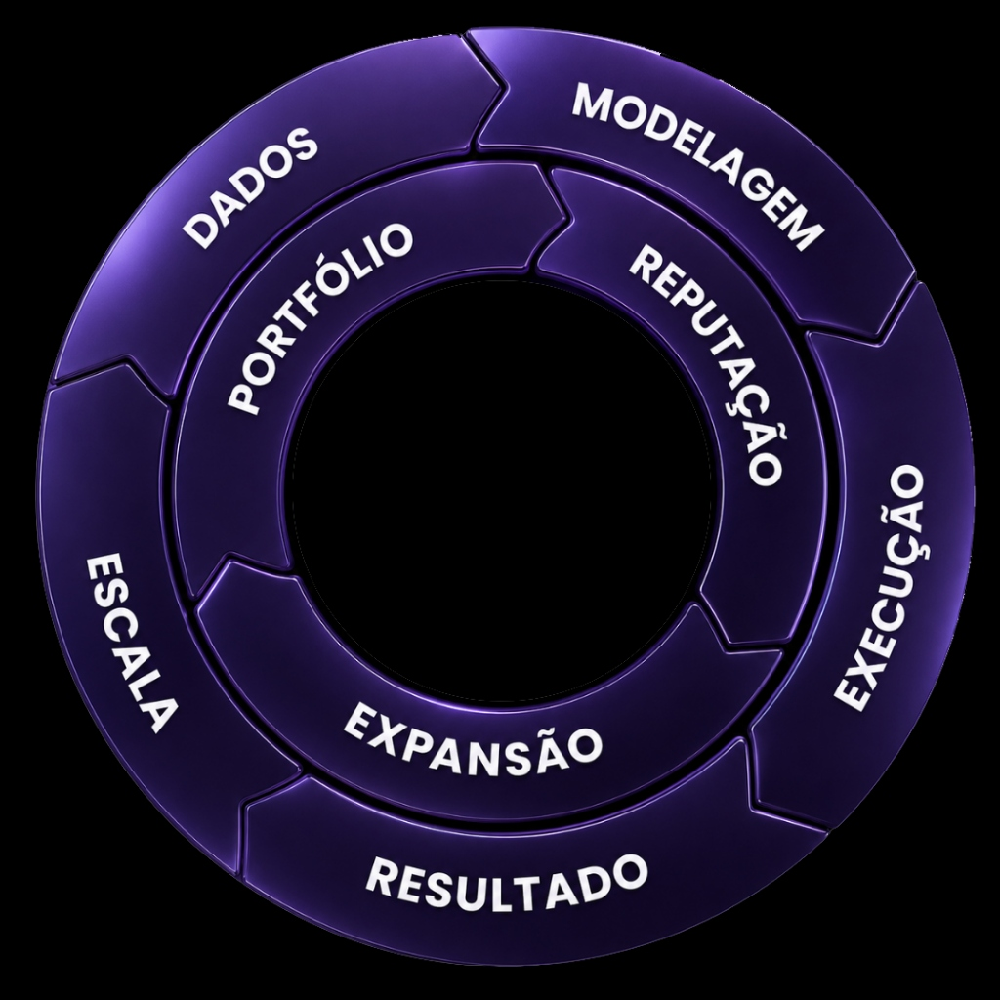
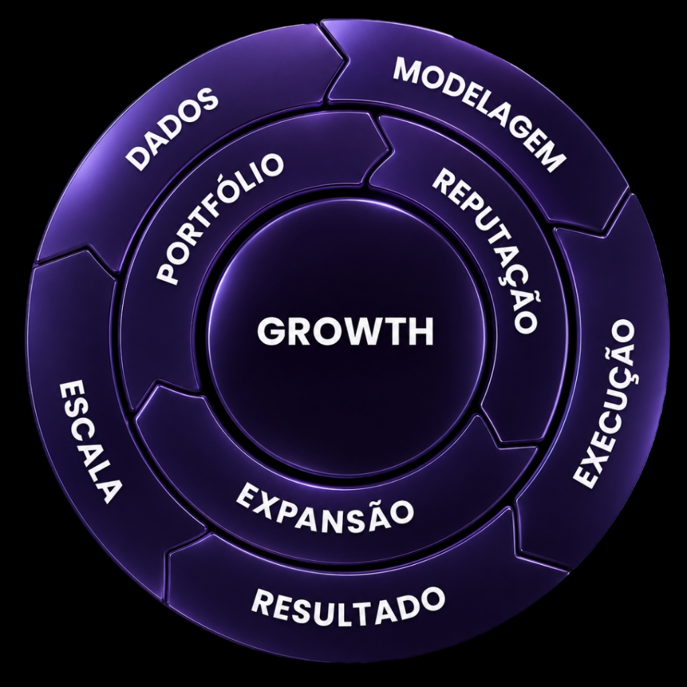

Este flywheel é composto por três ciclos concêntricos que se reforçam mutuamente, gerando um movimento contínuo de crescimento (growth). Cada ciclo representa uma camada que contribui para o fortalecimento das estratégias de crescimento.
Tudo começa com a coleta e análise de dados. Esta fase é essencial para embasar as decisões e identificar oportunidades. O uso inteligente dos dados permite construir hipóteses mais sólidas e fundamentadas para o crescimento.
Com base nos dados coletados, é feita a modelagem de estratégias. Aqui, definimos planos de ação e simulamos possíveis cenários, garantindo que as táticas escolhidas estejam bem alinhadas com os objetivos do negócio.
É o momento de colocar o plano em prática. Nesta fase, a modelagem é transformada em ações concretas e campanhas. A execução precisa ser ágil e focada para que possamos medir rapidamente o impacto.
Após executar as estratégias, avaliamos os resultados obtidos. Esta etapa envolve medir KPIs, coletar feedback e entender o impacto gerado, verificando se os objetivos foram alcançados.
Uma vez que identificamos o que funciona, é hora de escalar. Expandimos as estratégias de sucesso para um maior público ou área, buscando aumentar o impacto e gerar resultados mais expressivos.


O foco está em melhorar continuamente o produto ou serviço, adaptando-o às necessidades dos clientes e aprimorando suas funcionalidades. Um bom produto é o ponto de partida para conquistar e fidelizar clientes.
Um produto de qualidade leva à construção de uma reputação sólida. Aqui, nos preocupamos com a percepção do cliente, a experiência do usuário e o fortalecimento da marca no mercado, gerando confiança e credibilidade.
Com uma boa reputação estabelecida, é possível expandir para novos mercados ou públicos. A expansão ocorre de forma mais eficiente quando o produto e a marca têm um posicionamento claro e forte, permitindo conquistar novos espaços.
No centro do flywheel está o conceito de Growth, que representa o objetivo final e o motor que impulsiona todos os ciclos. Growth é a soma dos esforços coordenados de todos os ciclos anteriores, buscando crescimento sustentável e escalável.
Growth é alimentado pelas práticas contínuas de otimização do produto, construção de uma reputação sólida, execução estratégica, e ampliação da escala com base nos resultados. Cada ciclo contribui para criar um movimento constante de melhoria e crescimento.

A metodologia Algoritmux representa um modelo contínuo de crescimento, onde cada camada contribui e reforça o movimento do ciclo. Os três níveis trabalham juntos para garantir que cada aspecto do processo de growth seja otimizado e potencializado. Isso permite que o crescimento seja não apenas constante, mas também cada vez mais eficiente e sustentável.
Fale diretamente com os nossos estrategistas e desenhe o funil de conversão ideal para o seu negócio. Sem compromissos, focado 100% nas suas metas de vendas.